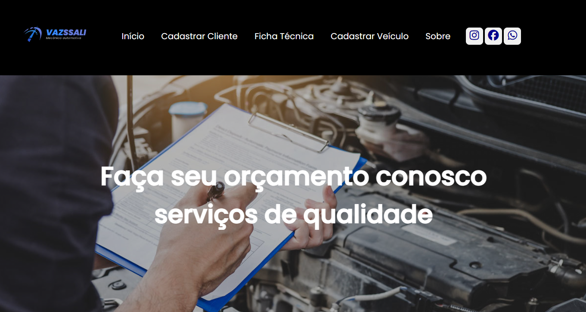
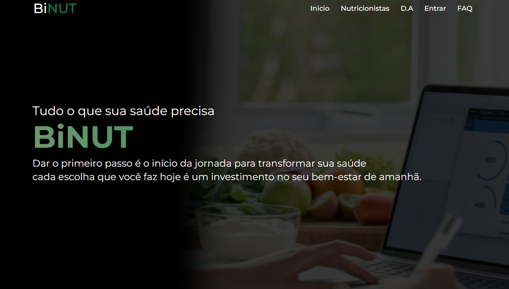

Meus Projetos
Vazssali - O Vazssali é um site desenvolvido em equipe em 2023 para simplificar o agendamento de serviços em oficinas mecânicas. Com uma interface intuitiva, otimizando a gestão das oficinas e proporcionando mais praticidade tanto para mecânicos quanto para motoristas.


BiNUT - Binut é um site voltado para nutricionistas, oferecendo uma plataforma intuitiva para agendamento de consultas, gestão de pacientes e acompanhamento nutricional. Com funcionalidades como lembretes automáticos e organização de prontuários, o Binut facilitava a rotina dos profissionais da área da saúde, tornando o atendimento mais eficiente e acessível. Criado em Equipe em 2024.
